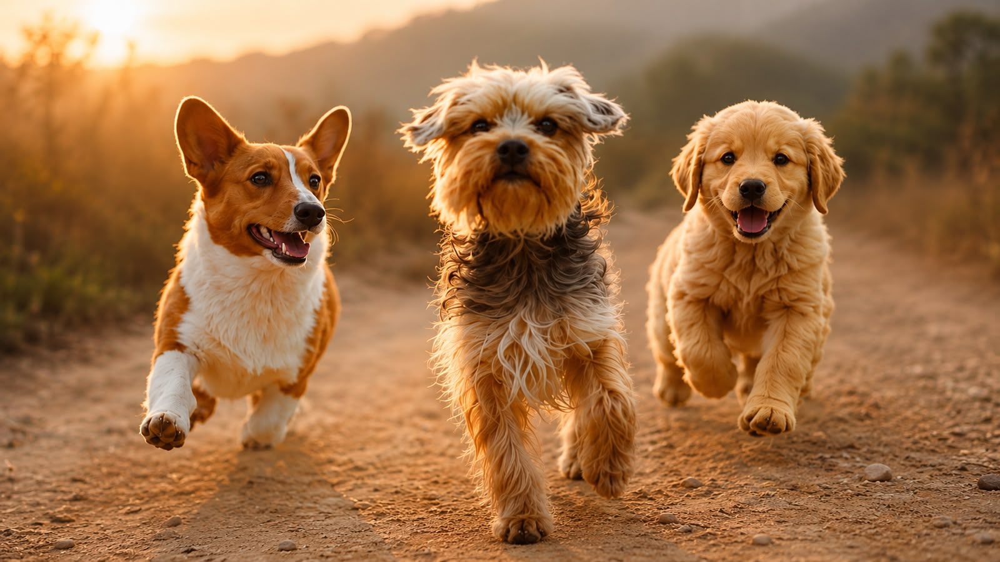
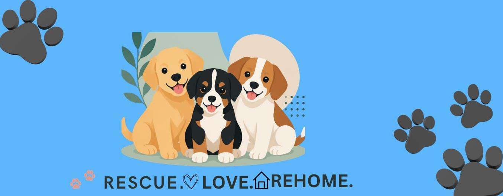
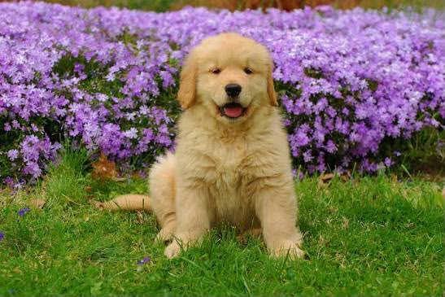
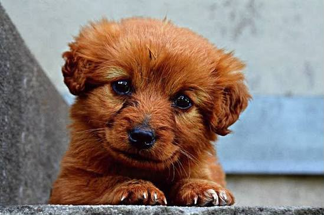
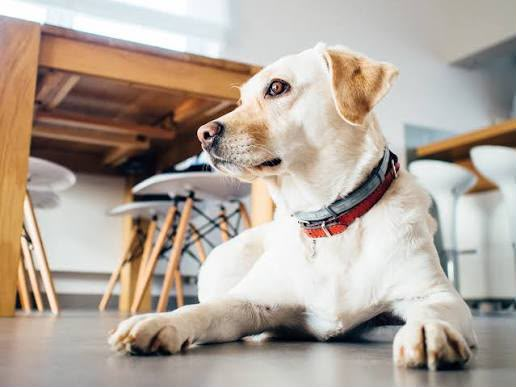

Rescue
We save pets in need.
Paws Shelter
Every Paw Deserves a Warm Home
We rescue, care for and rehome abandoned dogs and puppies in Pretoria. Together, we give every paw the love they deserve.


Every rescue. Every heart. Every home.
We save pets in need.
We provide love, medical care & a safe home.
We find forever homes for our paws.
Together, we create better futures.
They're waiting for a loving home like yours.

Golden Retriever • 3 months • Pretoria

Mixed Breed • 2 months • Pretoria
Golden Retriever • 3 months • Pretoria

Labrador Mix • 2 years • Pretoria
Beagle Mix • 1 year • Pretoria
Cavalier King Charles • 2 years • Pretoria